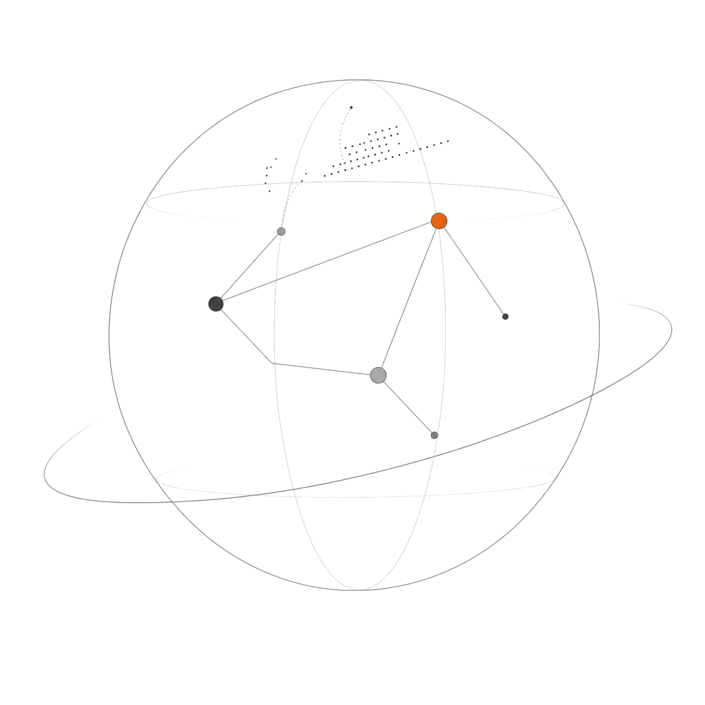

INDEPENDENT PRACTICE / 01
Game Publishing. AI Products. Indie Maker.
在游戏发行的全局视角中，把复杂工作拆成可复用的方法；也用 AI 放大内容、产品与增长的可能性，持续做独立的产品实验。

REASON IN SYSTEMS, FREEDOM IN CREATION.
INDEPENDENT PRACTICE / 01
在游戏发行的全局视角中，把复杂工作拆成可复用的方法；也用 AI 放大内容、产品与增长的可能性，持续做独立的产品实验。

REASON IN SYSTEMS, FREEDOM IN CREATION.